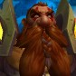

Guia de Altimor el Cazador en la banda Castillo de Nathria en dificultad NORMAL
Durante toda la pelea Altimor luchara junto a sus mascotas, el jefe compartira su vida con ella e iran cambiando a medida que vayan muriendo, en total tiene 3 mascotas. Concentraremos le daño en la mascota activa mientras dañamos a Altimor con daño cleave/aoe.
Altimore
Altimor solo utilizara dos habilidades durante toda la pelea.
Buscapecados (RAID)
Baltimor marcara a 3 jugadores del grupo, estos deben quedarse quietos y los demas alejarse, al terminar el casteo le disparara a cada uno una flecha penetrate que hara daño a todos los que se encuentre en el camino.
MARCADOS QUIETOS, LOS DEMAS ESQUIVAN
Tiro de Dispersion (RAID)
El ataque es un cono frontal de daño en direccion aleatoria, se trata de una habilidad rapida e imposible de predecir o esquivar, por lo que en vez de tratar de esquivar la zona de daño toda la raid se hubicara dispersa en la sala para mitigar la cantidad de personas recibiendo daño
DISPERSARSE LO MAS POSIBLE EN LA SALA, SIEMPRE EN RANGO DE LOS HEALERS!
1° Mascota - Sangremal
Esta sera la primer mascota contra la que pelearemos, nos centraremos en atacarle mientras realizamos daño cleave al boss aprovechando que sus vidas estan vinculadas.
Garras Dentadas (TANQUE)
Es un ataque individual dirigido al tanque que deja un sangrado de 30 segundos y se acumula, cambiaran entre Sangremal y Altimore cada 2-4 cargas
ASEGURARSE DE QUE SE TERMINE EL SANGRADO ANTES DE CAMBIAR EL AGRO
EMBESTIDA SAÑOSA (RAID)
Marcara a un objetivo aleatorio, si marca a un rango o healer todos los de su zona se deben acercar a el para sockear el daño, si marca a un melee todos los melee se deben juntar con el para sockear el daño, si hay un tanque sin marcas de sangrado tambien puede ayudar al sockeo. inmediatamente despues de la habilidad todos volveran a la posicion en la que estaban
SOCKEA Y VOLVE A TU POSICION INICIAL, SI ESTAS MARCADO CON BUSCAPECADOS ALEJATE!
2° Mascota - Bargast
Esta es la segunda mascota contra la que pelearemos, no podremos tenerlos juntos durante toda la pelea debido a las mecanicas de la misma, por lo que los dps centraran todo su daño en Bargast, y ocacionalmente dañaran con aoe o cleave a Altimor
Destripar alma (TANQUES Y HEALERS)
Es una habilidad individual dirigido al tanque que tiene el agro, le realizara mucho daño y creara una copia del tanque con la vida restante del afectado que caminara en direccion a Altimore por lo que debera usar un defensivo fuerte al momento de recibir el golpe, en esta etapa los curadores deben CURAR a la copia antes de que llegue al jefe mientras el otro tanque lo alejara lo mas posible, procurando no perder la vision de los healers
CURAS EN FOCO A LA COPIA! (DPS CON SANACIONES PUEDEN AYUDAR)
Sombras de Bargast (RAID)
Creara copias de si mismo a las que se las puede CCear, procuraremos no atacarlas mientras las mantenemos con polimorfia/trampa de hielo/sap o cualquier habilidad de CC de larga duracion, a medida que suba su barra de energia recibiran mas daño, por lo que esperaremos a que esten en 60-70% de energia antes de empezar a pegarles. Si se tarda mucho en matarlos y llegan a 100 puntos de energia ya no se les podra CCear y utilizara una habilidad que causara un wipe.
NO LE PEGUES A LOS CCEADOS HASTA QUE SEA EL MOMENTO ADECUADO.
3° Mascota - HECUTIS
Esta es la tercer mascota contra la que pelearemos, la mas fuerte de las tres, guardaremos el Heroismo/Ansia de Sangre/Distorsion Temporal para esta pelea. Volveremos a juntar a Altimor con su mascota durante esta pelea
Piedra aplastante (TANQUES)
Con cada acumulacion de esta habilidad Hecutis tendra una bonificacion de 50% de daño y se movera mas lento, al moverlo por la sala ira perdiendo las acumulaciones de daño aumentado pero realizara daño a toda la banda con cada paso que de
MOVER EL BOSS DESPACIO, ATENTO A LA VIDA DE LA RAID
Aullido Petrificador (RAID)
Marcara a los jugadores de la raid con un debuff de 8 segundos que nos ira reduciendo la velocidad de movimiento y realizando daño magico, al expirar el mismo nos convertira en piedra, al desvanecerse el efecto dejaremos un area que hara daño en nuestra ubicacion, por lo que debemos estar separados entre todos
SEPARARSE Y EVITAR EL DAÑO DE LAS AREAS
Video recomendado del encuentro
Autores:
